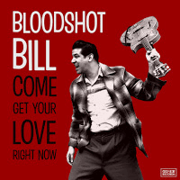

Bloodshot Bill - Come Get Your Love Right Now (Album, 2019)
01 - Come Get Your Love (2:31)
02 - Take Me For A Ride (2:27)
03 - Stumble (1:46)
04 - Don't Say Goodbye (2:21)
05 - Only Girl (2:15)
06 - Know Myself (2:34)
07 - Hook Me (2:16)
08 - Do What You Do (1:59)
09 - Drivin' (2:35)
10 - Driftin' (1:41)
11 - Don't Ever Go Away (2:16)
12 - Just Because (1:47)
13 - Drowning (1:47)
14 - I Don't Mind At All (2:11)
15 - One At A Time (1:51)
16 - Honey Dolling (2:06)
© Goner Records :: [157GONE]
Notes
Review
006/366 (Project 366)
The artist has a rather impressive discography. And almost unchanged style and mood. But sometimes with attempts to do something special and unique for himself. With greater opportunities for implementation and quality, for example. However I can to think that the most of releases are about songs with a very distinctive style and fully associatively with him. I heard other albums or recordings only in fragments. And this, actually, is the first album from Bloodshot Bill that I listened to. By the way, so catchy cover art for the title. I decided to review this album as most recent one. Although, apparently, the recordings were made long ago and long before the release date as I can to understand. The expectations of sound were met. In some places - even exceeded my expectations. Rockabilly in foggy mist - if you are ready!.
First song "Come Get Your Love" is awesomely laden and garage with very attractive chugalug. In fact, a bit alcophonic and frantic tune! Slurping vocals... sweetie toffee. Song even with allusion to a gentle melody! Oh, that is a beautiful country folk solos appearance! However the track is perhaps rather gloomy and around motion with burping. But, actually, it sounds effectively. Not as much spectacular as the next track "Take Me For a Ride" though. Second song is more buoyant and all with a curious effect. Around psycho surf and thrash ca-ca-ca craze! La-la loony! Fully crackpot tune, but perhaps it is clear what was the inspiration there. Many will like it. Surf riding under high freaked tune. Boost up as with motor engine, there is also a droll whistling! Then so lovely instrumental ballad appears, oh.. "Stumble" is a garage as is! Coolest cool melody with a little teasing.
With "Don't Say Goodbye" some variety appears. This sleepy love serenade is equal to a cat's meow and howl! Very quivering. Tremulous. Sensual song! Full and overflowing of emotions. Chic continuation with fifth track "Only Girl", where is a cool outlaw country rockabilly maybe. From Hillbilly fields, perhaps! The structure of the melody is a pretty. Quiet and peaceful at first (but nervously) - suddenly roared snarl! Quiet and peaceful back - roared snarl again! Original decision with adventure sensations. Raw sound and sleazy! Following track "Know Myself" is a bright highlight. Ooh! Wow.. is it still this man?! So tuneful! Twisting, maybe bopping and maybe suitable even for Teds. Rock for lovers too. Well, what can be enough to fuzz up! Seventh "Hook Me" can be, well. Wonderful. What is it!? Perfect whirligig! What the wavy! What the boppin' rattle! Pinwheel almost! Such an ambitious sound only increases with next track "Do What You Do". Song is a completely and terribly good bop-a-strophy. One of the most straightened tracks. With certain joyfulness. Rolling tune and many other sides of style! "Drivin'" track is around garage beat rock and roll with elements of surf. Well, drivin' surf. As with most of the other tracks, this song is driven-by rock and rollin' with slightly honky tonkin' and even with surfadelics tides. However strictly pinned to Rockabilly with authentic meanings of it. Next track "Driftin'" is an short and a bit lazy instrumental theme with clear title. Sound is about something around drifting and sensations of grumpy do-wacka-do. Eleventh track "Don't Ever Go Away" is a quite charm. Charm as is! Oomph. Glaringly indeed and rushing enough. Very interesting rhythmical set. "Just Because" is a cover version; but cover goes to his own style! The track is recognizable only with high effort. Since it sounds more as yet another hit, rather than repeating the success of other songs. Thirteenth track "Drowning" is a tranquil of wildness and numb instrumental. Maybe even with stomp background. And following track "I Don't Mind At All" is very astonishing, but twitching a bit. Very inspired by country and rockabilly classics, 'fifties' itself and own way of rocking. Fifteenth song "One At A Time" with a lovely attempt to combine most unique features of Bloodshot Bill in one tune. Whereas "Honey Dolling" sounds exclusively honeyed. Rockabilly bop perhaps. Good end to the album. Track is close to whole sound of "Come Get Your Love Right Now", but also with a fresh breeze.
All in all, tuned Rockabilly. But quite greasy and uncouth. Influenced, perhaps, by pretty rustic things. Maybe I can to call this sound as a lunatic roll! Drowsy, fuzzy, illegible, rattling rustle.. but how cocky it is painted! Come get his sound right now..